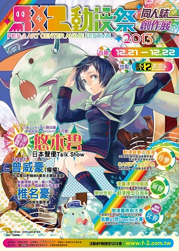
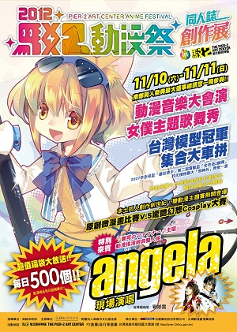
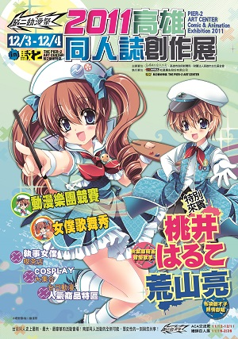

「GARNiDELiA&八王子P」LIVE 2016 in TAIPEI
- 2016.01.30
GARNiDELiA
由歌手MARiA和作曲家toku於2010年組成, 為多部動畫作品如《KILL la KILL》、《魔法科高中的劣等生》、《鋼彈G之復國運動》等演唱了主題曲。而toku本人也在NICONICO動畫上以とくP的身分, 做為一位VOCALOID作曲家而大為活躍, 創作出如「SPiCa」、「COLOR」、「blue bird」等名曲。
GARNiDELiA官方YouTube頻道
八王子P
創作出「Sweet Devil」、「エレクトリック・ラブ」、「Baby Maniacs」等名曲的八王子P, 在台、日兩地都有著超高的人氣, 近年也以DJ身分活躍在各類演出中。被譽為VOCALOID界的貴公子。
八王子P官方YouTube頻道- 日期2016年1月30日(六)
- 地點ATT SHOW BOX (台北市信義區松壽路12號)
- 票價NT$1,800元
fripSide LIVE in Taiwan 2015 ～infinite synthesis 1+2～
流日Project「TOTSUGEKI～台灣篇～」(2015)
- 2015.01.17
相信常在網路上衝浪的動漫歌曲粉絲,
對於「流田Project」這個團體絕不陌生!
團員們帶著面具、以狂野的搖滾手法改編無數首知名動漫歌曲,
近期內更擔任「聖闘士星矢Ω」、「ドラゴンコレクション」的動畫主題曲,
是的, 就是那個「流田Project」即將來台灣開場了!!
流日Project
以卓越的重新編曲能力, 以搖滾樂團的手法重新編製熱門的動畫音樂,
創造出在動畫系網站上累計20,000,000次以上(至2013年1月)的點閱次數。
並擔任2013年4月電視動畫「聖闘士星矢Ω」 新章「新生聖衣編」的主題曲!
發行了第一首動畫主題曲『未来聖闘士Ω ～セイントエボリューション～』!
並且自2014年4月起, 負責電視動畫「ドラゴンコレクション」的主題歌中!
以廉價中帶喜感的面具姿態中所無法想像到的吉他搖滾音, 在Live House的個人演唱會巡迴演出, 以及動畫音樂活動、搖滾音樂祭中精力充沛的活動中! 不論是重編樂曲、自創樂曲, 對於「流田Project」這個獨一無二的樂團所產生的音樂, 動畫粉絲就不在話下、甚至還吸引了搖滾吉他粉絲的目光。
流田Project官方YouTube頻道
(Nagareda Project)
特別來賓 Pile小姐
Pile小姐的聲優及歌手的代表作品為「Love Live」中的「西木野真姫」, 也有為台灣7-11官方角色「OPEN小將」的妹妹「Please美眉」配音。同時以個人名義, 以及「Please & Secret」、「4to6」等雙人組歌唱團體身分, 進行歌手的演藝活動。
Pile官方網站- 日期2015年01月17日(六)
- 地點The Wall 公館 (台北市羅斯福路4段200號B1)
- 票價NT$1,200元
- 主辦單位杜葳廣告股份有限公司
- 協辦單位台灣動漫畫推廣協會
今井麻美&彩音Joint Live 2014 in TAIWAN
- 2014.09.28
超人氣歌姬今井麻美海外初次公演, 預定將會演出「超次元アクション ネプテューヌU」的片頭曲「ヴィーナスのハルモニア」, 以及「コープスパーティーBLOOD DRIVE」的片頭曲「化身」等等。
而動畫、遊戲的歌姬彩音，首次登上台灣的演唱會上, 預定演出劇場版「STEINS;GATE 負荷領域のデジャヴ」片尾曲『いつもこの場所で』, 以及帶來高人氣作品「ひぐらしのなく頃に」、「11eyes」系列等多首知名歌曲來獻給台灣的大家喔!!
今井麻美
以聲優身分配有『シュタインズ・ゲート』牧瀬紅莉栖、『ノラガミ』伴音／真喩、『超次元ゲイム ネプテューヌ』ノワール／ブラックハート、『閃乱カグラ』斑鳩、『BLAZBLUE ALTER MEMORY』ツバキ＝ヤヨイ、遊戲『コープスパーティー』篠崎あゆみ、『ぷよぷよ7』あんどうりんご等等、演出過多部作品。也在網路廣播節目『今井麻美のSinger Song Gamer』等, 活躍於各項領域。於2008年後半起在遊戲『EVER17』中擔任片頭／片尾曲, 開始以歌手身分進行藝能活動。2009年4月由5pb.發行出道單曲『Day by Day / Shining Blue Rain』。2014年3月發行『超女神信仰 ノワール 激神ブラックハート』的片頭曲『漆黒のサステイン』。2010年11月發行第一張專輯『COLOR SANCTUARY』、2011年11月發行第二張專輯『Aroma of happiness』、2012年11月發行第三張專輯『Precious Sounds』、2013年11月發行第四張專輯『この雲の果て』。今井麻美小姐本人也會著手於作詞, 以獨特具有延展性的歌聲, 將情感深入於歌曲中並全面展現出來。
彩音
2004年以電視動畫『W～ウィッシュ～』主題曲『KIZUNA～絆』出道。並以高人氣作品『ひぐらしのなく頃に祭』的主題曲『嘆きノ森/コンプレックス・イマージュ』成為話題。此後更負責擔任動畫主題曲『ウミショー』、『AYAKASHI』、『11eyes-罪と罰と購いの少女-』、遊戲主題曲『ひぐらしデイブレイク』、『トリガーハートエグゼリカ』、『メモリーズオフ』系列、『11eyes』等等多數作品。以其帶沙啞感的高昂歌聲, 成為動畫與遊戲歌曲中不可或缺的歌手！並在科學冒險系列『シュタインズ・ゲート』中首次參戰、2013年4月發行『劇場版 シュタインズ・ゲート 負荷領域のデジャヴ』片尾曲『いつもこの場所で』, 同年5月發行『STEINS;GATE 線形拘束のフェノグラム』片頭曲『フェノグラム』, 11月發行PlayStation Vita版遊戲『シュタインズ・ゲート 線形拘束のフェノグラム』OP『邂逅（かいこう）のフェタリテート』, 2014年1月更發行第四張專輯『Luminous Flux』。- 日期2014年09月28日(日)
- 地點The Wall 公館 (台北市羅斯福路4段200號B1)
- 票價NT$1,500元
- 主辦單位杜葳廣告股份有限公司
- 協辦單位台灣動漫畫推廣協會
いとうかなこ&榊原ゆいLive! ～Hacking PHANTASM～ (2014)
angela Live in TAIWAN －ANISONG NIGHT－ (2013)
- 2013.10.12
「angela」是由atsuko(山下敦子) 小姐跟KATSU (平里勝敬) 先生兩人所組成的樂團, 現為日本KING RECORD公司旗下之樂團。除了演唱活動之外, 詞曲提供、樂器演出等等其它的活動也不少, 可說是相當多才多藝的團體。
atsuko小姐跟KATSU先生兩人都是岡山縣出身, 不過兩人當時是各自前往東京發展。兩人結識之後由於是同地出身又一樣喜愛音樂因此就組成了樂團開始進行創作和演唱活動。
2003年angela以動畫《宇宙的Stevilla》片頭曲「通往明日的brilliant」商業出道，由於angela嘹亮有力的曲風相當適合這 部青春學園劇, 片尾曲「綺麗的夜空」也展現出另一種輕快愉悅的曲風, angela因此大受好評, 台灣的讀者也大多是從這首歌認識他們。
2004年為熱門動畫「蒼穹之戰神」演唱的片頭曲「Shangri-La」相當的出色, 把angela的演唱以及創作功力完成表現出來, 片尾曲 「Separation」也展示出演唱慢歌的實力。2007年angela演唱動畫「Heroic Age」的片頭曲「gravitation」, 從慢版轉入氣勢澎湃的旋律相當貼切本作的氣氛, 讓人覺得他們在唱腔與曲風詮釋上又有新的突破, 是相當值得一聽的曲子。
由於angela多變又札實的演唱功力, 因此得到很好的評價。而後又連續演唱了「屍姫」「機巧魔神」、「K」、「革命機Valvrave the Liberator」等多部知名動畫的主題曲, 在海外也參加過多次的大型演出, 是相當受到動畫歌迷喜愛與肯定的歌唱團體。
2012年10月推出TV動畫「K」的主題歌「KINGS」、「To be with U! 」。2013年4月推出第六張專輯「ZERO」、5月開始進行出道10周年巡迴演唱會。並擔任預定2013年秋季播放的電視動畫「COPPELION」的片頭曲與片尾曲演唱。- 日期2013年10月12日(五)
- 地點The Wall 公館 (台北市羅斯福路4段200號B1)
- 票價NT$1,500元
- 主辦單位杜葳廣告股份有限公司 (Fancy Frontier)
- 協辦單位台灣動漫推廣協會
いとうかなこ Taipei Live 2012
KOTOKO ASIA TOUR 2012 IN TAIWAN
- 2012.05.12
知名動畫與遊戲歌手KOTOKO的亞洲巡迴演唱會「KOTOKO ASIA TOUR 2012 IN TAIWAN」台灣公演, 即將在5月12日與大家見面了!!
暌違三年的KOTOKO, 本次將帶專屬樂團來台, 為久違的台灣觀眾帶來最高水準的演出。演唱會選在已經舉辦過多場日籍動畫歌手演唱會的信義區Neo studio（舊名studio18）舉辦, 本場地觀眾與舞台距離極近, 全場均是搖滾區, 可就近享受最震撼的聲光效果。- 日期2012年05月12日(六)
- 地點Neo Studio (台北市松壽路22號5F)
- 票價NT$1,500元
- 主辦單位
- threenine entertainment
- 杜葳廣告股份有限公司 (Fancy Frontier
May'n ASIA TOUR 2011「UNITE!!」(incomplete)
- 2011.05.27
舉辦多年, 南台灣最盛大的同人盛會高雄駁二動漫祭, 即將在11月28~29日開跑啦！
往年都在大勇路上的P2、P3倉庫舉行, 而今年除了原本的表演舞台區月光劇場照舊外, 同人會場特別遷移到蓬萊倉庫B3、B4倉庫舉行！
除了原本既有的同人販售會之外, 場內還特別增加台灣動畫原創專區以及Cosplay特別展區, 回顧去年Cosplay大賽第一名御劍衝浪所帶來精彩的仙劍奇俠傳, 而場外本次也特別規畫主題式場景攝影專區, 有最受歡迎的高捷少女、迷路小瑪在萬金、屏東櫻花蝦絢櫻參與之外, 本次也特別邀請2014微漫畫得獎者籃寶所精心設計主視覺限定場景提供給大家拍照, 新場地新氣象也歡迎各位同好舊雨新知一同來參加喔!!- 日期2011年05月27日(五)
- 地點The Wall 公館 (台北市羅斯福路4段200號B1)
- 票價NT$3000元, 2200元, 1400元, 800元
- 主辦單位杜葳廣告股份有限公司 (Fancy Frontier)
- 協辦單位台灣動漫推廣協會
奧井雅美
- 奧井雅美 ASIA TOUR 2011 ～Troubadour～vol.2 in Taipei
演唱過《少女革命UTENA》、《秀逗魔導士》等多首著名動畫主題曲、廣受動漫迷喜愛的日本最著名的動畫女歌手奧井雅美小姐, 今年的亞洲巡迴演出將再度來到台灣與歌迷相見！演唱會中還邀請了知名聲優歌手栗林みな実小姐共同演出, 兩位實力派唱將會激發出什麼樣的火花呢？
奧井雅美小姐自出道以來即演唱過許多膾炙人口, 相當受到同好喜愛的經典歌曲。她同時也是從是詞曲創作, 並擔任音樂製作人, 是一位多才多藝的音樂人。栗林みな実小姐則是聲優兼歌手, 代表歌曲有《你所期望的永遠》的所有主題曲、《聖槍修女》片頭曲、《舞-HiME》、《舞-乙HiME》片頭曲等等。
本次的臺灣演唱會是兩人首次合作來台演出。除了台灣歌迷期待的經典動畫歌曲外, 還將精選過去未曾來台獨唱過的精彩歌曲, 實力派的唱腔絕能對能讓大家一飽耳福！- 日期2011年09月25日(日)
- 地點studio18 (台北市松壽路22号5F)
- 票價NT$1600元
- 主辦單位杜葳廣告股份有限公司 (Fancy Frontier)
- 企画制作MIU Co., Ltd.
- 協力SOLIDVOX
- 奧井雅美～Troubadour～vol.1 in Taipei (2010) (incomplete)
大受好評的駁二動漫祭，今年即將於11月15日～11月16日再度舉辦。
今年除了慣例的原創微漫畫大賽、驚艷幻想Cosplay大賽之外，更與第15屆國際漫畫家大會相結合，更添活動的深度。還有豪華的雙來賓組合，佐藤聰美小姐跟水瀨いのり小姐！以及來自高雄「ジュリリ・ジュリラン・未来・ゴロゴロコロニー13 世」（未來）的精采演出喔!- 日期2010年05月08日(日)
- 地點studio18 (台北市松壽路22号5F)
- 票價NT$1600元
- 主辦單位杜葳廣告股份有限公司 (Fancy Frontier)
- 企画制作MIU Co., Ltd.
- 協力SOLIDVOX
JAM Project (incomplete)
- JAM Project LIVE 2011 GO! GO! GOING!!
～ARIGATO TOMODACHI～知名動畫歌演唱團體JAM Project, 自2008年起每年的巡迴演唱會都會來到台灣舉辦, 2011年自然也不例外, 不過上一場演唱會在2010年8月, 而這次的演唱會則在12月初，相隔將近一年半, 就以全員到齊而言, 仍然要說「好久不見了」。
演唱會的舉辦日期在12月3日、4日, 地點跟之前的奧井雅美一樣, 是位於台北市信義區的Studio18, 由於本場地音響效果極好大受好評, 日方音響人員也感到非常滿意, 因此決定選在這個場地以能完美發揮JAM Project的歌唱威力, 也因為這次場地較小的關係, 因此也繼2009年再次連唱兩天, 讓台灣歌迷能夠自行選擇方便參加的天數。- 日期2011年12月03日(六), 12月04日(日)
- 地點studio18 (台北市松壽路22号5F)
- 票價NT$2600元
- 主辦單位杜葳廣告股份有限公司 (Fancy Frontier)
- 協辦單位台灣動漫推廣協會
- JAM Project LIVE 2010 10th Anniversary Tour MAXIMIZER～Decade of Evolution～ (incomplete)
大受好評！第二屆動漫音樂大匯演、可愛女僕主題歌舞表演、動漫模型百面相主題特展、熱血拚畫！原創微漫畫比賽以及鏡頭焦點紫艷幻想Cosplay大賽！這麼多的活動以及同人誌販售活動, 還有高雄在地歌手曾威豪、日本特別來賓知名電玩音樂作曲家椎名豪現場演出、當紅新生代日本聲優悠木碧Talk Show！讓你目不暇給的精彩內容就在本週末舉行, 高雄駁二藝術特區就在鹽埕埔捷運站等你來喔！
- 日期2010年08月21日
- 地點studio18 (台北市松壽路22号5F)
- 票價NT$2600元
- 主辦單位杜葳廣告股份有限公司 (Fancy Frontier)
- 協辦單位台灣動漫推廣協會
- JAM Project Hurricane Tour 2009 in Taipei ～Gate of the Future (incomplete)
大受好評！第二屆動漫音樂大匯演、可愛女僕主題歌舞表演、動漫模型百面相主題特展、熱血拚畫！原創微漫畫比賽以及鏡頭焦點紫艷幻想Cosplay大賽！這麼多的活動以及同人誌販售活動, 還有高雄在地歌手曾威豪、日本特別來賓知名電玩音樂作曲家椎名豪現場演出、當紅新生代日本聲優悠木碧Talk Show！讓你目不暇給的精彩內容就在本週末舉行, 高雄駁二藝術特區就在鹽埕埔捷運站等你來喔！
- 日期2009年05月30日, 05月31日
- 地點studio18 (台北市松壽路22号5F)
- 票價NT$2600元
- 主辦單位杜葳廣告股份有限公司 (Fancy Frontier)
- 協辦單位台灣動漫推廣協會
- JAM Project WORLD FIGHT 2008 in TAIPEI (incomplete)
大受好評！第二屆動漫音樂大匯演、可愛女僕主題歌舞表演、動漫模型百面相主題特展、熱血拚畫！原創微漫畫比賽以及鏡頭焦點紫艷幻想Cosplay大賽！這麼多的活動以及同人誌販售活動, 還有高雄在地歌手曾威豪、日本特別來賓知名電玩音樂作曲家椎名豪現場演出、當紅新生代日本聲優悠木碧Talk Show！讓你目不暇給的精彩內容就在本週末舉行, 高雄駁二藝術特區就在鹽埕埔捷運站等你來喔！
- 日期2008年06月01日
- 地點studio18 (台北市松壽路22号5F)
- 票價NT$2600元
- 主辦單位杜葳廣告股份有限公司 (Fancy Frontier)
- 協辦單位台灣動漫推廣協會
極限燃燒 (incomplete)
- 極限燃燒II 翻天覆地 (2009) (incomplete)
這是敝單位第５年在高雄舉辦動漫同人活動, 也是繼去年12月的「2011駁二動漫祭」之後, 第2次在駁二藝術特區舉辦活動。「2012駁二動漫祭」與去年同樣是由高雄市政府文化局主辦。
或許是兩個會場都會送前２百名免費福袋的關係, 一大早工作人員一到現場就發現兩個會場入口都是大排長龍, 直到開場前兩邊都延伸到了很遠的位置, 開場後更是人潮洶湧, P2倉庫甚至在特地區域要進行單向管制, 以免人潮將社團攤位擠翻, 而第一天的P2直到中午12點半人龍才消化完畢, 可想像當天人潮是多麼的洶湧。
這次與去年相同, 同人社團區分為兩個會場, 但今年則是分在道路兩邊的Ｐ２與自行車倉庫, 只要走一點路就能來回兩個會場, 論步行時間甚至比在台大巨蛋上下樓梯還少, 因此相較去年方便了很多。今年由於採用「報攤送攤」的方式, 因此兩天攤位數都達到近500攤, 再次刷新台北場以外的最多攤位數紀錄。另外在會場一角, 我們也設置了模型展示區, 展示許多製作精美、甚至曾得獎的模型（關於這些模型的來歷詳見本期前面的介紹）, 這次在會場也有陳列觸控螢幕介紹台灣與高雄漫畫歷史、漫畫家介紹以及高雄在地漫畫的發展歷程, 同時也展示了在這場舉辦的原創微漫畫得獎作品。
這場駁二動漫祭是我們今年最後一場同人活動, 這一年, 我們分別到了台中、桃園、高雄辦了多場大型活動, 光是同人活動就多達８場, 可說過了非常「充實」的一年, 且其中「桃園國際動漫大展」更獲行政院觀光局青睞成為台灣觀光年曆票選的桃園代表, 能以動漫活動之姿入圍國家級評選, 實在是非常難得的一件事, 要特別感謝各方的支援以及所有同好們的支持才能每一場都留下精彩的成績。而很快的明年２月新年過後就是寒假大場FF21, 也請大家繼續支持我們活動喔！
(開拓動漫情報誌2012年12月號報導)- 日期2009年11月28日
- 地點studio18 (台北市松壽路22号5F)
- 票價NT$2600元
- 主辦單位杜葳廣告股份有限公司 (Fancy Frontier)
- 協辦單位台灣動漫推廣協會
- 極限燃燒演唱會 (2007) (incomplete)
這是敝單位第５年在高雄舉辦動漫同人活動, 也是繼去年12月的「2011駁二動漫祭」之後, 第2次在駁二藝術特區舉辦活動。「2012駁二動漫祭」與去年同樣是由高雄市政府文化局主辦。
或許是兩個會場都會送前２百名免費福袋的關係, 一大早工作人員一到現場就發現兩個會場入口都是大排長龍, 直到開場前兩邊都延伸到了很遠的位置, 開場後更是人潮洶湧, P2倉庫甚至在特地區域要進行單向管制, 以免人潮將社團攤位擠翻, 而第一天的P2直到中午12點半人龍才消化完畢, 可想像當天人潮是多麼的洶湧。
這次與去年相同, 同人社團區分為兩個會場, 但今年則是分在道路兩邊的Ｐ２與自行車倉庫, 只要走一點路就能來回兩個會場, 論步行時間甚至比在台大巨蛋上下樓梯還少, 因此相較去年方便了很多。今年由於採用「報攤送攤」的方式, 因此兩天攤位數都達到近500攤, 再次刷新台北場以外的最多攤位數紀錄。另外在會場一角, 我們也設置了模型展示區, 展示許多製作精美、甚至曾得獎的模型（關於這些模型的來歷詳見本期前面的介紹）, 這次在會場也有陳列觸控螢幕介紹台灣與高雄漫畫歷史、漫畫家介紹以及高雄在地漫畫的發展歷程, 同時也展示了在這場舉辦的原創微漫畫得獎作品。
這場駁二動漫祭是我們今年最後一場同人活動, 這一年, 我們分別到了台中、桃園、高雄辦了多場大型活動, 光是同人活動就多達８場, 可說過了非常「充實」的一年, 且其中「桃園國際動漫大展」更獲行政院觀光局青睞成為台灣觀光年曆票選的桃園代表, 能以動漫活動之姿入圍國家級評選, 實在是非常難得的一件事, 要特別感謝各方的支援以及所有同好們的支持才能每一場都留下精彩的成績。而很快的明年２月新年過後就是寒假大場FF21, 也請大家繼續支持我們活動喔！
(開拓動漫情報誌2012年12月號報導)- 日期2007年05月01日
- 地點studio18 (台北市松壽路22号5F)
- 票價NT$2600元
- 主辦單位杜葳廣告股份有限公司 (Fancy Frontier)
- 協辦單位台灣動漫推廣協會
Dream Stage～yui&minori～ (2008) (incomplete)
- 2008.12.07
繼前年的「動漫高雄．精采樂活」、去年的「2009高雄動漫展」之後, 由高雄市政府主辦、開拓動漫祭承辦的「2010高雄動漫展」活動, 在經過一年的時間之後, 終於又在今年的８月中旬舉辦了！由於前兩場皆在南台灣地區的動漫圈中造成極大好評, 因此這次的「2010高雄動漫展」也是從公佈日起就相當的受到矚目。這次的兩日社團報名攤位總數超過800攤, 維持了去年的水平, 而這場活動的舉辦時間雖然僅在8月中旬, 但已經屬於暑期從７月開始一連串各式大型動漫活動的尾聲, 原本也擔心是否會因為同好已經感到疲累而讓參加人數減少, 但這兩天在開場前場外是大排長龍, 幾乎將場外能供拉列的空間都用上了, 而開場後不論第一天還第二天場內皆是到處擠得水洩不通, 再次讓人驚嘆高雄活動的熱力。
(活動回顧報導刊載於Frontier雜誌2010年8月號)- 日期2008年12月07日
- 地點studio18 (台北市松壽路22号5F)
- 票價NT$2600元
- 主辦單位杜葳廣告股份有限公司 (Fancy Frontier)
- 協辦單位台灣動漫推廣協會
Dream Stage～angela&Momoi～ (2008) (incomplete)
 2008.09.28
2008.09.28在9月28日，angela和桃井はるこ在台北市政府親子廣場舉行了Dream Stage - angela & momoi台北演唱會。雖然正值颱風襲台，許多歌迷還是不畏風雨的到場參加。angela和桃井はるこ賣力的演出，以及歌迷們熱情的反應，讓這場演唱會在風雨之中圓滿而熱烈的結束。
演唱會在當天晚間６點30分開演，前段首先由angela出場。
綺麗な夜空 / 未来とゆう名の答え / fly me to the sky / The end of the world / Separation / DEAD SET / YOU GET TO BURNING / 果て無きモノローグ / Peace of mind / 明日へのbrilliant road / Shangri-La / EN1. 残酷な天使のテーゼ / EN2.gravitation
在中場休息之後，接著就是桃井はるこ出場。
Party! / GURA GURA / トンドルベイビー / ナイト・で・ないと / Adolescence -rainy Taipei version- / 愛のメディスン / Hide and seek / 今、あなたが好き / 21世紀 / WONDER MOMO-I / Feel so Easy! / Romantic summer (momo-i ver) / 悠遠のアミュレット / さいごのろっく / Thunder Shot! / LOVE.EXE / EN.ゆめのばとん
安可曲演唱結束後，桃井小姐請angela再次上台一起謝幕，結束了這個熱烈的颱風夜。- 日期2008年09月28日
- 地點studio18 (台北市松壽路22号5F)
- 票價NT$2600元
- 主辦單位杜葳廣告股份有限公司 (Fancy Frontier)
- 協辦單位台灣動漫推廣協會
聖夜歌姫演唱會 (2007) (incomplete)
2007.12.23
在2007年的聖誕夜前夕，12月23日晚上，我們邀請到了動畫歌曲的２位知名女歌手栗林みな実和美郷あき小姐來台舉行演唱會，這也是她們第一次在海外的演唱。
演唱曲目
美郷あき
くちびる白昼夢 / Blood Queen / もう愛しかいらない / 君が空だった / Silent wing / 明日をとめないで / If…～I wish～（feel it mix）/ HAPPY CHERRY FESTA! / disarm dreamer / 少女迷路でつかまえて
栗林みな実
Rumbling hearts / マブラヴ / Precious Memories / 翼はPleasure Line / おなじ月をみてる / Blue Treasure / Shining☆Days / Dream☆Wing / Yell！ / Next Season
安可曲
栗林みな実 /Crystal Energy
栗林みな実+美郷あき /Shining☆Days- 日期2008年09月28日
- 地點studio18 (台北市松壽路22号5F)
- 票價NT$2600元
- 主辦單位杜葳廣告股份有限公司 (Fancy Frontier)
- 協辦單位台灣動漫推廣協會
Yuki Kajiura LIVE vol. #11 elemental Tour 2014 in Taipei
- 2014.04.12
繼去年夏天於國家音樂廳熱鬧登場的「偉大的航道：田中公平動漫交響音樂會」, 開啟了台灣舉辦動漫音樂的演奏先河並引起廣大迴響後, 2014年在粉絲們殷殷期盼下, 開拓動漫邀請到曾為許多知名動畫配樂的新銳音樂家「梶浦由記」大神與她的優秀音樂團隊「Fiction Junction」, 完整人馬首度來台演出！
梶浦由記活躍在日本動畫、遊戲、電視廣告及電影界, 擅長將各種民族音樂與美妙和聲融合一體, 形成華麗魔幻的音樂, 並創作出如《刀劍神域》、《Fate/Zero》、《魔法少女小圓》、《機動戰士鋼彈SEED》、《NOIR》、《TSUBASA翼》、《潘朵拉之心》、《舞-Hime》等多部膾炙人口的主題歌曲與配樂。喜歡梶浦大神令人動容的魔幻磅礡音樂的粉絲們, 請千萬不要錯過這場年度盛會！- 日期2014年04月12日 (六)
- 地點ATT SHOW BOX (台北市信義區松壽路12號)
- 演出團體梶浦由記&FictionJunction
- 票價NT$3800元, 2800元, 1800元
偉大的航道 田中公平動漫交響音樂會 (2013)
- 2013.06.16
將在6月16日於國家音樂廳舉辦的田中公平動漫交響音樂會, 確定將邀請人氣鋼琴家Pianeet侯爵、知名資深聲優日高のり子 (日高範子) 及井上喜久子參與演出！
演出作品預定會有《櫻花大戰》、《航海王》、《冰菓》、《勇往直前》、《重力異想世界GRAVITY DAZE》等作品, 詳細曲目確定後會更進一步公告, 請密切注意官網消息喔！
特別來賓介紹
田中公平
日本知名的影視與動漫配樂作曲／指揮家, 其所創作之配樂曲目無數, 有許多膾炙人口的當紅影視節目配樂均出自其手, 至今已創作超過百部經典影視動畫配樂, 被稱為日本『配樂第一人』。
田中公平畢業於東京藝術大學音樂學部作曲學系, 並於美國百克里音樂學院研習配樂製作。其創作風格多變而精煉, 對於日本傳統樂器與爵士樂風格的創作, 更是其所特長之處。作品中常看見熱血激昂為其音樂之特色, 創作出了《檄！帝國華擊團》《ONE PIECE海賊王》《魔動王》《勇者王》等膾炙人口的名作, 其中又以遊戲配樂作品出身延續到動畫、舞台劇的《櫻花大戰》奠定在日本動畫配樂的地位。
Pianeet侯爵
畢業於東京藝術大學, 並於同校取得碩士學位。從正統科班畢業的ピアニート公爵因對於日本古典樂界日趨閉鎖的風氣有感, 選擇以假名在網路上開始他的演奏生涯, 除了古典音樂的演出外, 並選擇許多動畫與遊戲的配樂演出, 配合其深厚的古典訓練, 演出廣獲好評。
自2007年開始在NICONICO動畫投稿鋼琴演奏影片, 將《偶像大師》的『蒼い鳥 (M@STER VERSION) 』改編為鋼琴獨奏曲, 點閱再生數高達70萬人, 2011年更將投稿作品集結成專輯發售, 得到AMAZON暢銷排行及日本Oricon公信排行榜單日排行第一名。
日高のり子 (日高範子)
參與的重要角色有《鄰家女孩》淺倉南、《龍貓》草壁皋月、《亂馬1/2》天道茜、《犬夜叉》桔梗以及《櫻花大戰》艾莉卡, 演出角色非常多樣化, 尤其以活潑的少年少女最多。
井上喜久子
著名的角色有《幸運女神》蓓兒丹蒂、《亂馬1/2》天道霞、《星空的邂逅》風見瑞穗、《櫻花大戰》羅貝莉亞．卡爾里尼等, 從讓人印象深刻的溫柔女性到活潑、惡女的角色都有參與。是永遠的17歲。- 日期2013年06月16日 (日)
- 地點國立中正文化中心 ─ 國家音樂廳
- 特別邀請
- 田中公平
- ピアニート公爵
- 日高範子
- 井上喜久子
- 演出團體台北愛樂管弦樂團
- 指揮田中公平、林天吉(台北愛樂駐團指揮)
- 票價NT$4800元, 3600元, 2800元, 2400元, 1800元, 1200元, 800元
SWEET x SWEET (incomplete)
- SWEET x SWEET vol.3 藤原啓治x櫻井孝宏Special talk show in 台灣 (incomplete)
大受好評！第二屆動漫音樂大匯演、可愛女僕主題歌舞表演、動漫模型百面相主題特展、熱血拚畫！原創微漫畫比賽以及鏡頭焦點紫艷幻想Cosplay大賽！這麼多的活動以及同人誌販售活動, 還有高雄在地歌手曾威豪、日本特別來賓知名電玩音樂作曲家椎名豪現場演出、當紅新生代日本聲優悠木碧Talk Show！讓你目不暇給的精彩內容就在本週末舉行, 高雄駁二藝術特區就在鹽埕埔捷運站等你來喔！
- 日期2015年10月04日 (日)
- 地點Neo Studio (台北市松壽路22號5F)
- 票價NT$1800元
- SWEET x SWEET vol.2 藤原啓治x游佐浩二Special talk show in 台灣
藤原啓治代表作品
TIGER & BUNNY (Jake Martinez)
青の祓魔師 (藤本獅郎、撒旦)
HUNTER×HUNTER (第2作)(雷歐力)
西洋骨董洋菓子店 (橘圭一郎)
戦国BASARA (松永久秀)
PSYCHO-PASS (東金朔夜)
魔力小馬 (蒼月紫暮)
Vassalord.血咒聖痕 系列 (雷夫羅)
鋼之鍊金術師 (馬斯•休斯)
蠟筆小新 (野原廣志)
遊佐浩二代表作品
BLEACH (市丸ギン)
薄桜鬼 (原田左之助)
TIGER & BUNNY (Lunatic/Yuri Petrov)
黒執事系列 (劉)
黑色嘉年華 Karneval (朔)
東京闇鴉 (大友陣)
鬼燈的冷徹 (白澤)
魔人偵探腦嚙涅羅 (笹塚衛士)
葬儀屋里德路 (里德路)
假面騎士電王 (浦太洛斯ス/U良太郎)- 日期2015年10月04日 (日)
- 地點Neo Studio (台北市松壽路22號5F)
- 票價NT$1800元
- SWEET x SWEET vol.1 藤原啓治x平田廣明Special talk show in 台灣
為台灣的活動, 特別寫出完全新作的廣播劇劇本, 這麼天大好康的事情, 對於並非日本境內舉辦的活動而言, 原本是海外粉絲們只能夢想、不敢奢望的超級撒必死…
「由藤原啓治×平田廣明兩位超級帥大叔」x「完全貼身量造的新作劇本」, 如此夢幻的組合, 將在台灣實現！！
不僅僅是演出陣容的組合近乎奇蹟, 連劇本都是新作這點, 就連主辦單位的我們都驚喜萬分, 還請粉絲們、真的千萬不能錯過這樣的機會啊！！
劇本現在還在熱烈製作中, 而實際演出時又會用「哪些聲音」呢？（都說這麼白了, 請別再逼我們說下去了, 再說下去就要被滅口啦～）就還請大家到演出現場準備好大量衛生紙… 擦眼淚？要擦歡樂的淚水也OK, 不過主要功用當然是拿來擦口水囉！！
擔心廣播劇的演出內容無法徹底參透？請各位粉絲不用擔心, 關於這點我們早就想好對策了, 現場會準備中文版本翻譯文, 讓大家在享受美聲演出之餘, 也能同步理解劇情內容喔！！- 日期2014年05月25日 (日)
- 地點Neo Studio (台北市松壽路22號5F)
- 票價NT$2000元, 1500元
- 主辦單位杜葳廣告股份有限公司
- 協辦單位台灣動漫畫推廣協會
日野聰與寺島拓篤的熱帶遊樂園 (2015)
 日野聰與寺島拓篤的熱帶遊樂園
日野聰與寺島拓篤的熱帶遊樂園日野聰知名代表作品
AMNESIA (トーマ)
ログ・ホライズン (アイザック)
金色のコルダ シリーズ (衛藤桐也)
金色のコルダ3 シリーズ (冥加玲士、衛藤桐也)
NARUTO -ナルト- 疾風伝 (サイ)
裏切りは僕の名前を知っている -黄昏に堕ちた祈り- (降織千紫郎)
ハイキュー!!(澤村大地)
銀魂° (神威)
コードギアス 亡国のアキト 第1章「翼竜は舞い降りた」(佐山リョウ)
弱虫ペダル (新開隼人)
マギ The kingdom of magic (練紅明)
隠の王 (相澤虹一)
八犬伝―東方八犬異聞― (犬川荘介)
はぐれ勇者の鬼畜美学 (上崎遼平)
灼眼のシャナ (坂井悠二)
ゼロの使い魔 (平賀才人)
寺島拓篤知名代表作品
うたの☆プリンスさまっ♪ マジLOVE1000% (一十木音也)
魔界王子 devils and realist シリーズ (ダンタリオン・ヒューバー)
ログ・ホライズン (シロエ)
デュラララ!! (渡草三郎)
創聖のアクエリオン (アポロ/アポロニアス)
美男高校地球防衛部LOVE! (下呂阿古哉)
神撃のバハムート (アレン)
ムシブギョー (無涯)
会長はメイド様! (更科郁斗)
八犬伝―東方八犬異聞― (犬田小文吾)
はぐれ勇者の鬼畜美学 (ゼクス)
創聖のアクエリオン (アポロ/アポロニアス)
遙かなる時空の中で5 (桐生瞬)
遙かなる時空の中で6 (有馬一)
猛獣使いと王子様 シリーズ (シルビオ)
STORM LOVER (御子柴恭介)- 日期2015年07月05日 (日)
- 地點Neo Studio (台北市松壽路22號5F)
- 票價NT$1800元
- 主辦單位杜葳廣告股份有限公司
- 協辦單位台灣動漫畫推廣協會
福山潤
- 福山潤 一人首腦會議 (2014)
福山潤知名代表作品
コードギアス 反逆のルルーシュ (ルルーシュ・ランペルージ)
青の祓魔師 (奥村雪男)
WORKING!! (小鳥遊宗太)
「K」(八田美咲)
中二病でも恋がしたい! (富樫勇太)
血液型くん! (A型)
まおゆう魔王勇者 (勇者)
境界線上のホライゾン (葵・トーリ)
金色のコルダ Blue♪Sky (如月響也)- 日期2014年09月14日 (日)
- 地點Neo Studio (台北市松壽路22號5F)
- 票價NT$1500元
- 主辦單位杜葳廣告股份有限公司
- 協辦單位台灣動漫畫推廣協會
 福山潤的浪漫派對 (2013) (incomplete)
福山潤的浪漫派對 (2013) (incomplete)喜愛動漫畫的你, 對於福山潤這個名字應該不陌生吧? 無論是表界的王子魯路修、音樂天才志水桂一、死神格雷爾, 或是裡界角色在夜裡給聽眾帶來的甜蜜呢喃......。
由於福山潤先生在日本的工作行程滿檔, FF多次進行邀請他前來參加活動卻總因為時間無法配合而飲憾, 現在終於有了轉機!! 福山先生明年初將有一小段私人假期, 他願意挪出私人的休假時間前來台灣與粉絲見面, 並進行與粉絲分享心情的私密Talk Show舞台!!
福山潤知名代表作品
コードギアス 反逆のルルーシュ (ルルーシュ・ランペルージ)
青の祓魔師 (奥村雪男)
WORKING!! (小鳥遊宗太)
「K」(八田美咲)- 日期2013年01月01日 (二)
- 地點國立台灣師範大學公館校區中正堂
(台北市文山區汀州路四段88號) - 票價NT$1200元, 1000元
- 連署主辦FancyFrontier 開拓動漫
- 宣傳協力aniarc 同人雲
森川社長in台灣 (2013)
- 森川社長in台灣 (2013)
想近距離感受森川智之那充滿男性魅力的低音嗎？想感受一下與森川智之共度興奮滿點的相處時刻嗎？粉絲特別服務活動, 主辦單位也奮力爭取囉～ 請千萬別錯過這個機會喔！
森川智之代表作品
戦国BASARA (片倉小十郎)
彩雲国物語 (藍楸瑛)
今天開始魔の自由業! (肯拉德)
闇之末裔 (巽征一郎)
FINAL FANTASY VII ADVENT CHILDREN (賽費羅斯)
犬夜叉 (奈落)
火影忍者 (波風湊)
是 -ZE- (三刀彰伊)
白熊咖啡廳 (貓熊媽媽)- 日期2013年10月19日 (六)
- 地點Neo Studio (台北市松壽路22號5F)
- 票價NT$2200元, 1700元
- 連署主辦FancyFrontier 開拓動漫
- 宣傳協力aniarc 同人雲